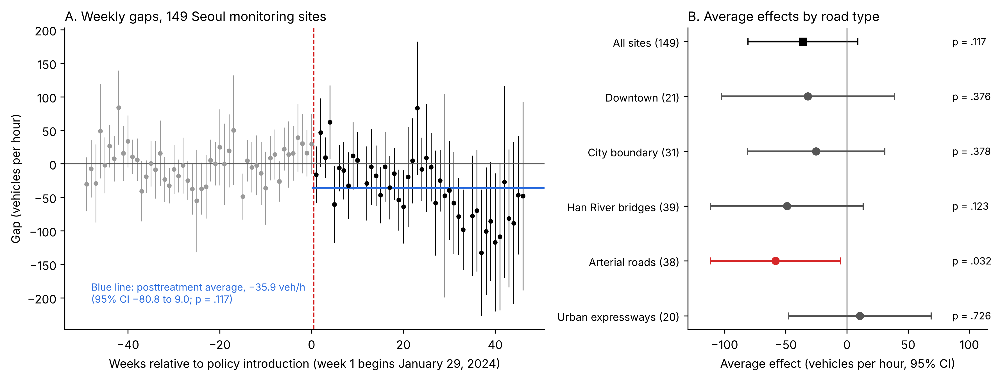
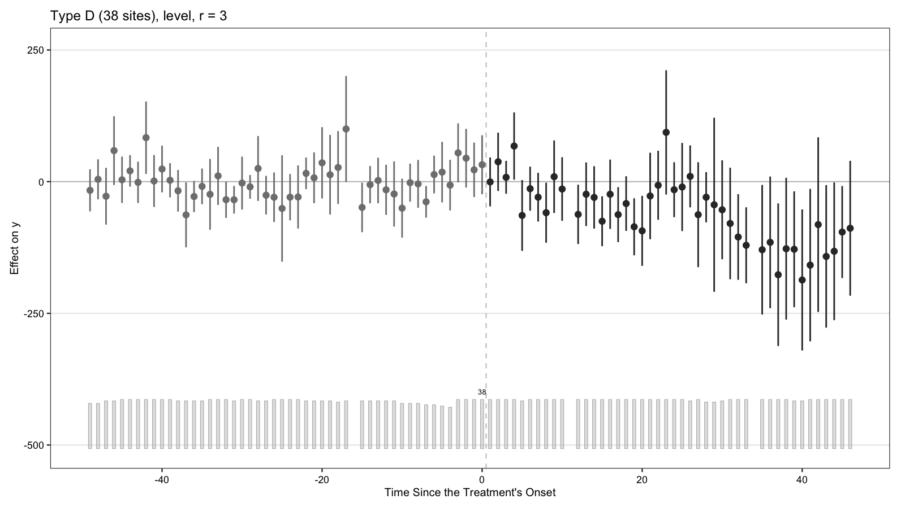
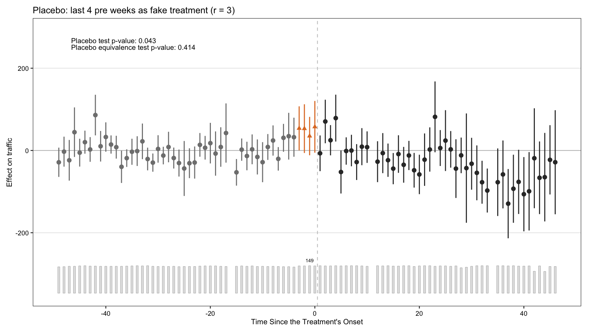

⑤ 서울 전역 도로 교통량⑤ Road traffic across Seoul
여의도 밖으로 범위를 넓혀, 서울 TOPIS 관측 지점 149곳의 평일 오전 교통량을 서울 밖 비교 지점 53곳과 일반화 합성통제법(GSC)으로 비교했습니다. 더 넓은 도로 분석에서는 서울 도로망 전체의 일관된 교통량 감소가 확인되지 않았습니다.Extending beyond Yeouido, weekday-morning traffic at 149 Seoul TOPIS monitoring sites is compared with 53 sites outside Seoul using generalised synthetic control (GSC). The broader road analyses did not establish a consistent traffic reduction across Seoul’s road network.
설계Design
- 결과변수: 06:00–09:59 시간당 교통량의 일 중앙값을 주 단위로 다시 중앙값 낸 값(대/시). 96주(처치 전 50주, 후 46주).Outcome: weekly median of daily medians of hourly counts, 06:00–09:59 (vehicles per hour); 96 weeks (50 pretreatment, 46 posttreatment).
- 지점·주 고정효과, 추가 공변량 없음, 잠재요인 3개(GMSPE 최소). 지점 단위 부트스트랩 200회.Site and week fixed effects, no additional covariates, three latent factors (minimum GMSPE); 200 site-level bootstrap replications.
- 도로 유형: A 도심, B 시계, C 한강 교량, D 간선도로, F 도시고속도로. 유형별로 따로 3요인 모형을 적합했습니다.Road types: A downtown, B city boundary, C Han River bridges, D arterials, F urban expressways; separate three-factor models by type.
결과Results
전체 추정치의 구간은 감소와 작은 증가를 모두 포함합니다. 다섯 도로 유형 중 3요인 모형에서 유의하게 감소한 것은 간선도로뿐이고, 도심·시계·한강 교량·도시고속도로는 유의하지 않았습니다. 0요인 대안 모형도 전체 추정치는 음수였지만 유의성은 사양에 따라 달랐습니다.The pooled interval includes a reduction as well as a small increase. Among the five road types, only arterial roads showed a significant decrease in the three-factor specification; downtown, city-boundary, Han River bridge and urban-expressway changes were not significant. The zero-factor alternative also gave a negative pooled estimate, but significance depended on the specification.
같은 45주 동안 오전 기록이 완전한 간선도로 31곳의 평일 오전 교통량은 주당 약 2.3만 대 줄었고, 같은 기간 오전 대중교통 이용은 주당 약 15.8만 인일 늘었습니다. 관측된 교통량 감소는 대중교통 이용 증가에 비해 작습니다.Over the same 45 weeks, weekday-morning traffic at the 31 arterial sites with complete morning records fell by about 23,000 vehicles per week, while morning transit use rose by about 158,000 person-days per week. The observed traffic reduction was small relative to the increase in transit use.
출처: 논문 원고 v4 1.1–1.2절, 2.4절, 4.1절.Source: manuscript v4, sections 1.1–1.2, 2.4 and 4.1.
도로 유형별 (3요인 모형)By road type (three-factor models)
| 유형Type | 지점Sites | 효과 (대/시)Effect (veh/h) | 95% CI | p | 반사실 대비vs CF |
|---|---|---|---|---|---|
| A 도심A downtown | 21 | −31.95 | −102.61 – 38.72 | .376 | −2.65% |
| B 시계B city boundary | 31 | −25.24 | −81.34 – 30.86 | .378 | −0.86% |
| C 한강 교량C Han River bridges | 39 | −49.00 | −111.36 – 13.35 | .123 | −1.95% |
| D 간선도로D arterials | 38 | −58.34 | −111.66 – −5.02 | .032 | −3.16% |
| F 도시고속도로F urban expressways | 20 | +10.44 | −47.85 – 68.72 | .726 | +0.28% |
출처Source: results/05_seoul_road_gsynth/bytype/bytype_level_min.csv (간선도로 값이 논문과 같음) (arterial values match the manuscript)
도시고속도로 9개 노선 (전일 교통량, SCM)Nine urban expressways (all-day traffic, SCM)
| 노선Route | 일평균 교통량 (양방향)Avg daily traffic (both dir.) | 사전 RMSPEPre-RMSPE | RMSPE 비율RMSPE ratio | 위약 pPlacebo p | 사양Spec |
|---|---|---|---|---|---|
| Bukbu Expressway | 109,066 | 2,078 | 1.85 | .818 | |
| Bundang-Suseo Expressway | 133,320 | 2,301 | 1.09 | .345 | |
| Dongbu Expressway | 136,213 | 2,348 | 1.88 | .404 | |
| Gangbyeonbuk-ro | 224,855 | 4,088 | 1.90 | .800 | 지수화indexed |
| Gangnam Circular Expressway | 90,220 | 1,950 | 2.51 | .536 | |
| Gyeongbu Expressway | 189,919 | 2,935 | 1.37 | .790 | 지수화indexed |
| Naebu Circular Expressway | 139,322 | 2,410 | 2.04 | .596 | |
| Olympic-daero | 244,535 | 3,446 | 1.89 | .455 | 지수화indexed |
| Seobu Expressway | 51,313 | 918 | 1.76 | .417 |
아홉 노선 모두 유의하지 않습니다. 출처All nine routes are not significant. Source: …/expressway_allday_scm/table_SI_expressways_manuscript.csv (원고 부록 D 표 값). 경로 그래프는 데이터 탐색 페이지에 있으며, 재실행 결과라 원고 값과 정확히 같지 않습니다.(manuscript SI Appendix D values). Path charts are on the data-explorer page; they come from a rerun and do not reproduce the reported values exactly.
간선도로 모형은 시행 전 4–6주 동안 실제 교통량이 예측보다 유의하게 높았습니다. 2023년 12월 중순에 끝나는 검정에서는 차이가 없었지만, 그 시점은 결과를 본 뒤 정했습니다. 2024-01-15부터 남산터널 혼잡통행료를 도심 방향만 받도록 바꿔 도심 지점에 영향을 줄 수 있습니다(간선도로 지점은 직접 영향 구간 밖). 도로 유형 간 p값은 다중비교 미보정입니다. In the four to six weeks before launch, arterial traffic ran significantly above the model’s predictions; tests ending in mid-December 2023, chosen after seeing these results, showed no gap. From 15 January 2024 the Namsan Tunnels charge applied only to city-bound vehicles, which could affect downtown sites (arterial sites lie outside the directly affected corridor). P-values across road types are not adjusted for multiple testing.



그림 4는 code/05_seoul_road_gsynth/plot_fig_section2_4_road.py로 저장소 자료에서 다시 그렸습니다. 전체 −35.9는 diag_event_att_r3.csv의 처치 후 44주 주별 ATT를 관측 지점 수로 가중 평균한 값(−35.914)과 같습니다. 구간과 p값은 저장소에 없는 적합 객체에서 나왔습니다. 유형별 그림은 갤러리에 있습니다.Fig. 4 is redrawn from repository data with code/05_seoul_road_gsynth/plot_fig_section2_4_road.py. The pooled −35.9 equals the count-weighted mean of the 44 posttreatment weekly ATTs in diag_event_att_r3.csv (−35.914); the interval and p-value come from the fitted model object, which is not in the repository. By-type figures are in the gallery. 갤러리gallery
코드Code
code/05_seoul_road_gsynth/ — 입력 패널: data/road/. 도시고속도로 9개 노선 SCM 재실행 스크립트(expressway_allday_rerun_20261103.R)는 원 Rmd와 입력 자료가 저장소에 없어 그대로는 실행되지 않습니다.input panel: data/road/. The nine-expressway rerun script (expressway_allday_rerun_20261103.R) needs the original Rmds and input data, which are not in the repository.